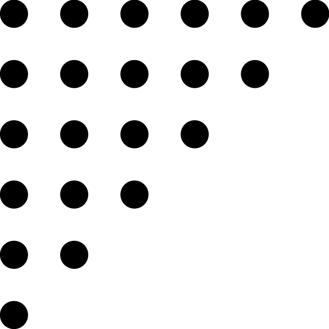
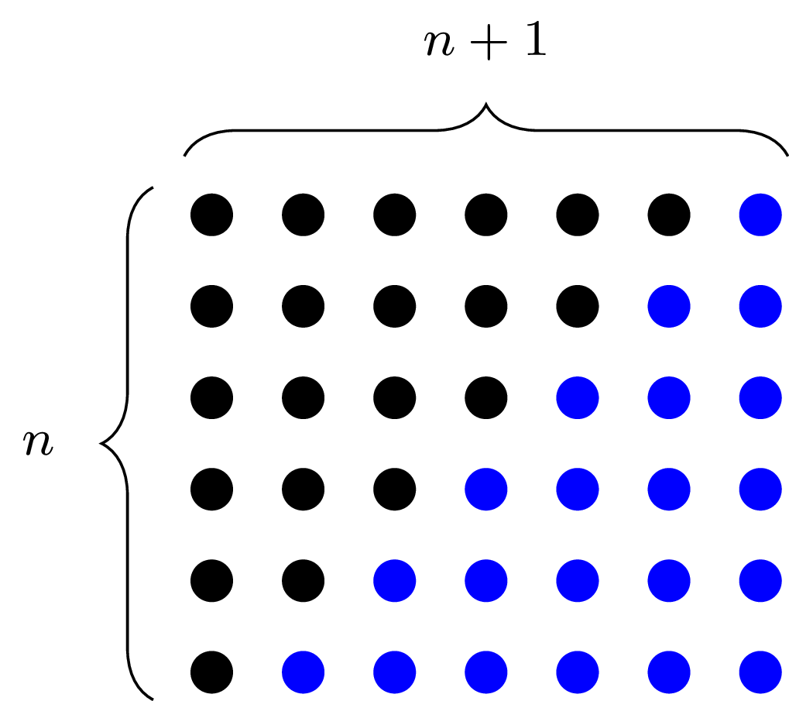

Muchas veces se nos plantean problemas matemáticos abstractos y es difícil encontrar un problema de la vida real que se corresponda con ese problema abstracto.
Dado un problema de matemáticas abstracto, podemos realizar un ejercicio muy curioso, que es buscar un problema concreto que implique la resolución de ese problema abstracto.
El problema abstracto
Estaba el profesor de Gauss cansado por el revuelo que formaban sus alumnos cuando decidió plantearles un problema que les tuviese entretenidos por un largo periodo de tiempo. El problema era el siguiente:
Sumar todos los números naturales desde el 1 hasta el 100
Sin embargo, Gauss contestó casi al instante con la respuesta correcta: \(5050\)
Búsqueda del problema concreto
Un enunciado que implica resolver el problema abstracto planteado por el profesor de Gauss podría ser el siguiente:
Desiderio es una persona muy despistada, es por ello que todos los años ha de comprar tantas velas como años va a cumplir, ya que no reutiliza ninguna del año anterior. ¿Cuántas velas habrá comprado el día que celebre su centésimo cumpleaños?
El hecho de poder ver un problema abstracto como un problema concreto, nos acerca el problema y da más sentido a su resolución, pues la solución adquiere un significado.
Note
Con esto, no quiero decir que un problema abstracto del cual no se conozca un posible problema concreto deba ser ignorado. Es más, existen muchos problemas abstractos en la historia de las matemáticas que se han estudiado sin conocerse ninguna aplicación y han resultado ser de suma importancia para la humanidad. Un ejemplo es el álgebra de Boole.
Resolución del problema general
Vamos a plantear el caso general del problema del profesor de Gauss y resolverlo por distintos métodos:
Sumar los \(n\) primeros números naturales.
Método 1: Agrupando términos
Para resolver el problema, podemos agrupar, al igual que hizo Gauss, los términos último y primero, penúltimo y segundo, tercero y antepenúltimo …
Como todos los sumandos agrupados tienen valor \(n+1\) y hay un total de \(\dfrac{n}{2}\), sabemos que la suma da como resultado:
Método 2: Manipulando Series
La suma que queremos calcular se puede expresar como la siguiente serie:
Si multiplicamos por \(2\), entonces tenemos lo siguiente:
Por tanto, despejando \(S(n)\) tenemos que \(S(n) = \dfrac{n(n+1)}{2}\)
Método 3: Solución geométrica
Si representamos el resultado de la suma como puntos distribuidos en el plano formando un triángulo rectángulo en el que cada fila tiene un punto más que el anterior, obtenemos la siguiente figura:

Si realizamos una copia de este triángulo, podemos formar un cuadrado y contar fácilmente el número de puntos con la fórmula \(\text{base} \cdot \text{altura}\)

Por tanto el número total de puntos es \(\dfrac{base \cdot altura}{2}\)
Está es la razón por la que estos números (la suma de los \(n\) primeros números naturales) son conocidos como números triangulares.
Solución concreta
Conociendo la solución general podemos fácilmente encontrar una solución concreta para \(n=100\) simplemente dando valores. La solución general para la suma de los \(n\) primeros términos es \(S(n) = \dfrac{n(n+1)}{2}\), por tanto para \(n=100\) obtendríamos \(S(100) = \dfrac{100 \cdot (100 + 1)}{2} = \dfrac{10100}{2} = 5050\)